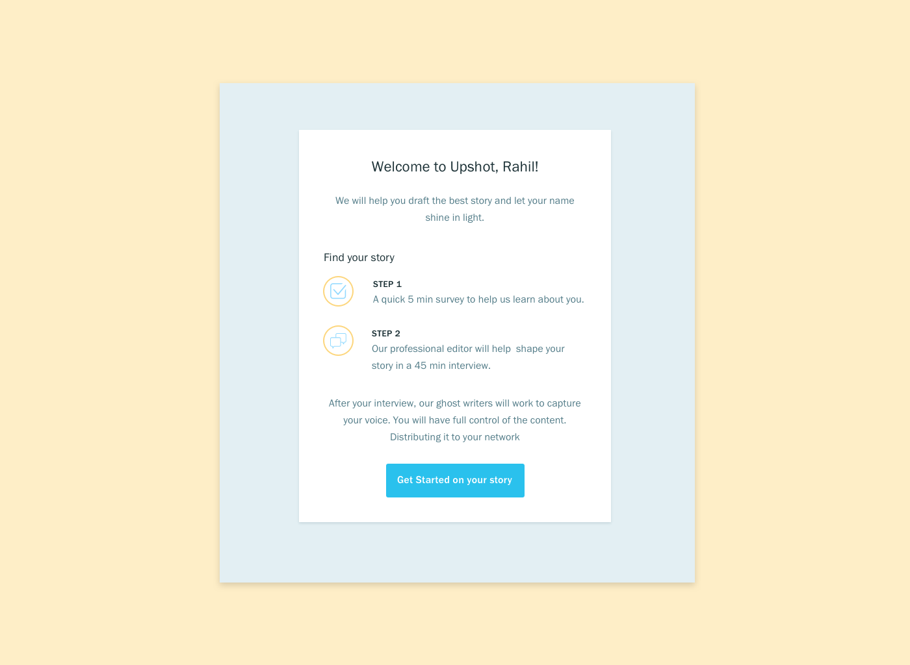
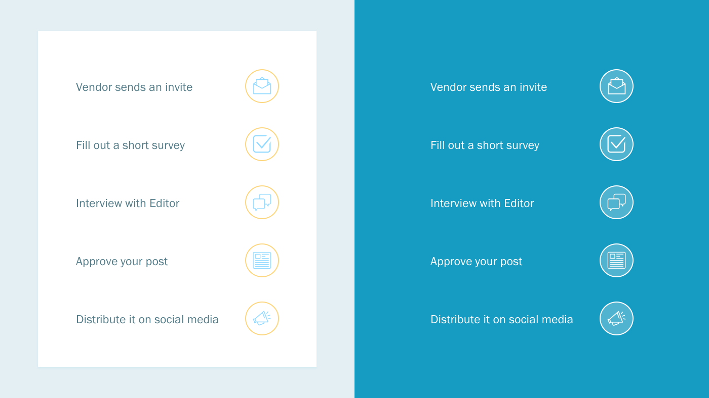
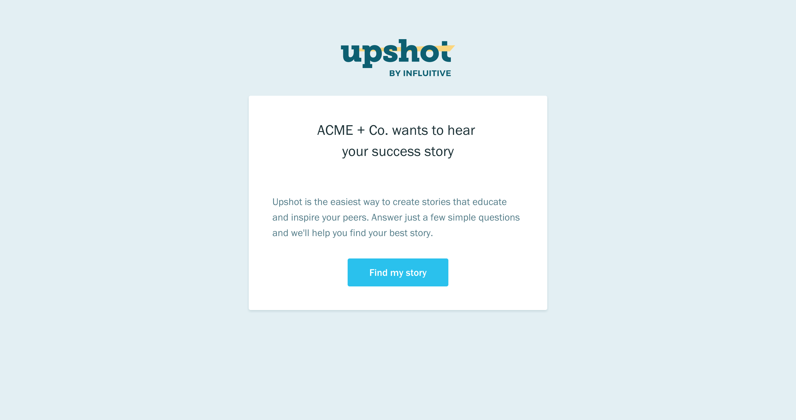
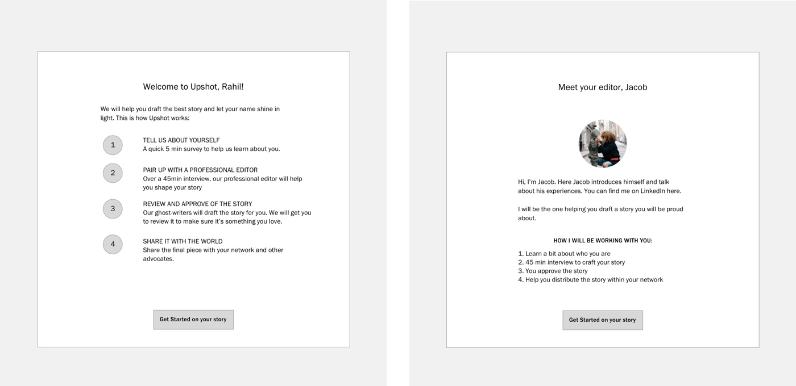
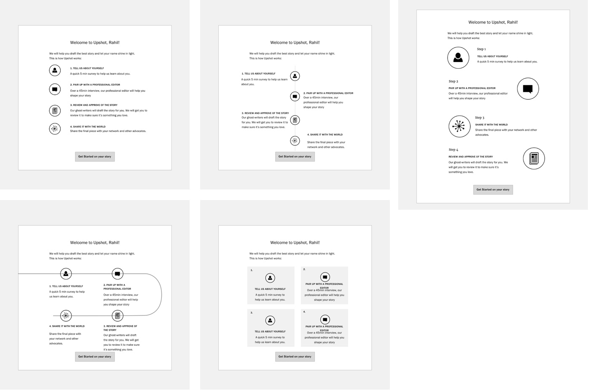
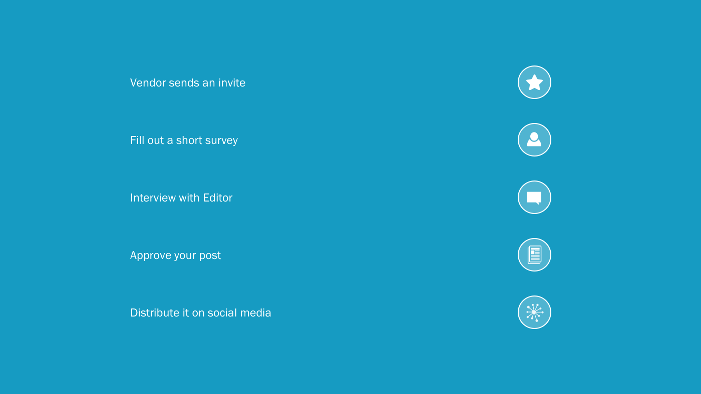
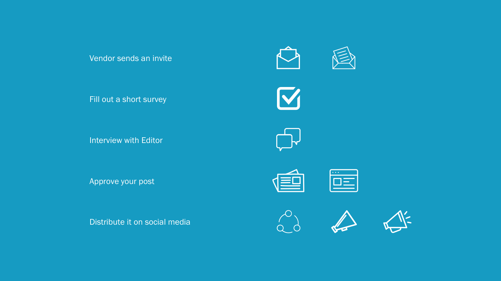

After we launched our MVP, we saw a high drop-off rate. In addition, many users did not fully understand our product offering. Within a week, I identified key areas of improvements, redesigned the most problematic step, and redesigned icons for better communication.
Improving the Upshot Onboarding Experience
UX/UI Design and Icon Design
The Final Design
The goal of the redesign was to help users understand the benefits of our service and educate them on how the process works. The new design comprehensively outlines the process. It highlights the immediate steps so it is easier to read. It also explains the subsequent steps to set up proper expectations.

Start Screen redesign.
New Icons
The new icons are consistent in style and they help communicate the onboarding process.

New icon set.
The Redesign Process
I audited the onboarding flow to identify key issues. Based on the audit, the Start Screen had the most problems:
- It did not inform users on what is expected of them
- It did not educate users on the importance of Finding Your Story
- The copy is not cohesive: title of the page did not match the copy below

The onboarding experience audit

The original start screen
Ideation
I first explored two alternative paths: 1) listing each step and 2) introducing the editor to help build rapport.
We really like idea #2, but the technical complications of assigning editors were still unknown. We decided to go with idea #1. However, listing each steps is boring and hard to read. Thus, I explored various layouts using icons on our homepage.

Alternative ideas

Alternative layouts
Icon Redesign
Some of the original icons did not help with communication. Their styles were also inconsistent. I decided to design a new set of icons.
With very little time, I searched The Noun Project to find icons based on keywords. I selected line icons that were rectangular in shape. I then tweaked them in Illustrator to create matching styles.

Original Icons

Icons selected from the Noun Project